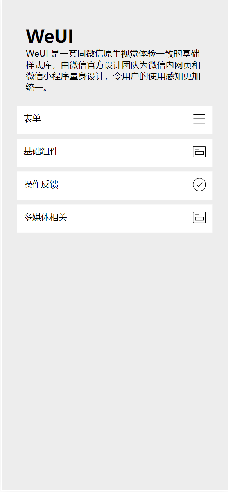
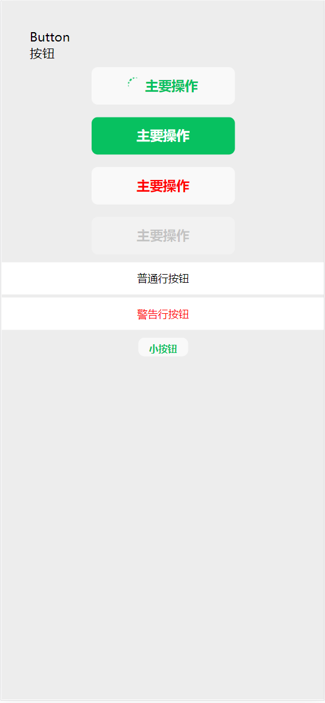
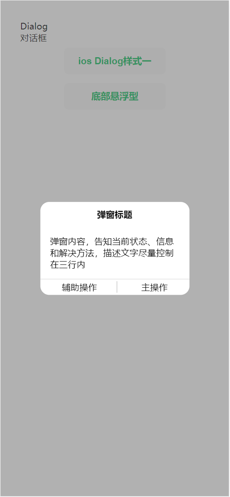
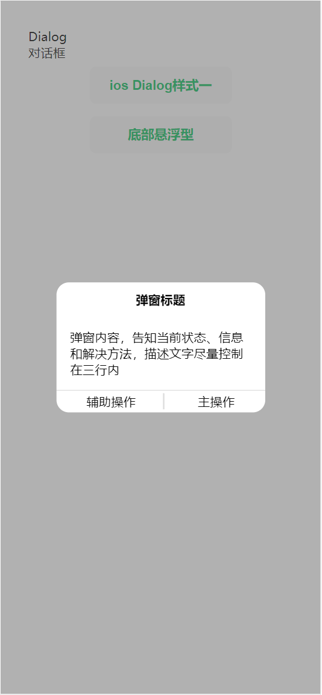
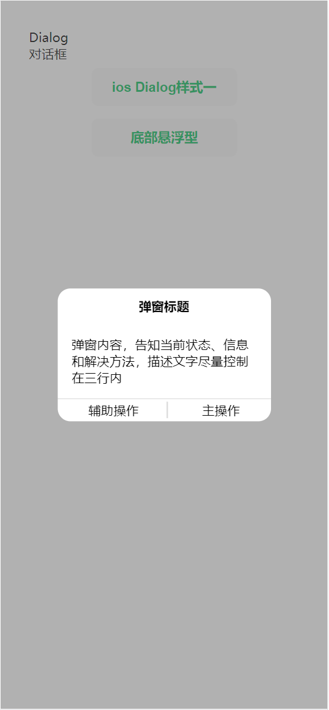

郭欣奇(Xinqi Guo)

male
(frontend development)
telephone:15545723169
wechat:15545723169
email:2264712072@qq.com
education expericence
post graduate:Harbin Normal University
time:2019-2023
major:software engineer
bachelor:Northeast Agriculture University
time:2013-2018
major:Agricultural and Forestry Economic Management Major
work expericence
2022.3-2022.6,
hightopo (Tianjin branch)
career:frontend development
hightopo (Tianjin branch)
career:frontend development
take part in many projects，some projects are solo ，some expericence with interactive with server side
skills
- familiar with HTML、CSS and JavaScript， can implement with design sketch。
- familiar with common frontend frame，such as React、Vue，
- understand frontend engineer concept and familiar with tools as Webpack、Vite
- Easy to get along with workmate
- familiar with webgl
- familiar with Unix/Linux
projects
anglog clock
Apply Qt framework，code is clean. Use custom controls
dino
dino is simple to relax。Dino shows when Chrome browser is offline
base on canvas 2d，high effective，can kill boring time
monkey language interruptor
use go lang，c like grammer，support number，string，bool，arithmetic expression，function as first
class civil，support closure，hashmap and array
code
address:https://github.com/cazser/monkey
weui-vue
base on vite+vue3，implements such as
button，folder，dialog，select，radio，date select，switch, calender ,those are vary useful components



 



code
address:https://github.com/cazser/weui-vue
